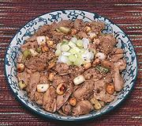

|
Cold Dressed ChickenChina - Sichuan - Liangban ji | ||||
| Serves: Effort: Sched: DoAhead: |
4 salad ** See Steps Most |
Many cold chicken dishes are made in Sichuan. They are usually quite simple, but distinctly dressed. This one can serve as an cold appetizer, or as a cold chicken salad. | |||
|
14 4 1/3 ------- 1/2 1/2 2 2 3 3 1 ------- |
oz c ---- t t t T T T t --- |
Chicken, cooked (1) Scallions Peanuts, roasted (2 -- Dressing Sichuan Pepper (3) Salt Black Vinegar (4) Soy Sauce Chicken Broth (5) Chili Oil (6) Sesame Oil -- Garnish Sesame Seeds (7) |
Do Ahead:
|